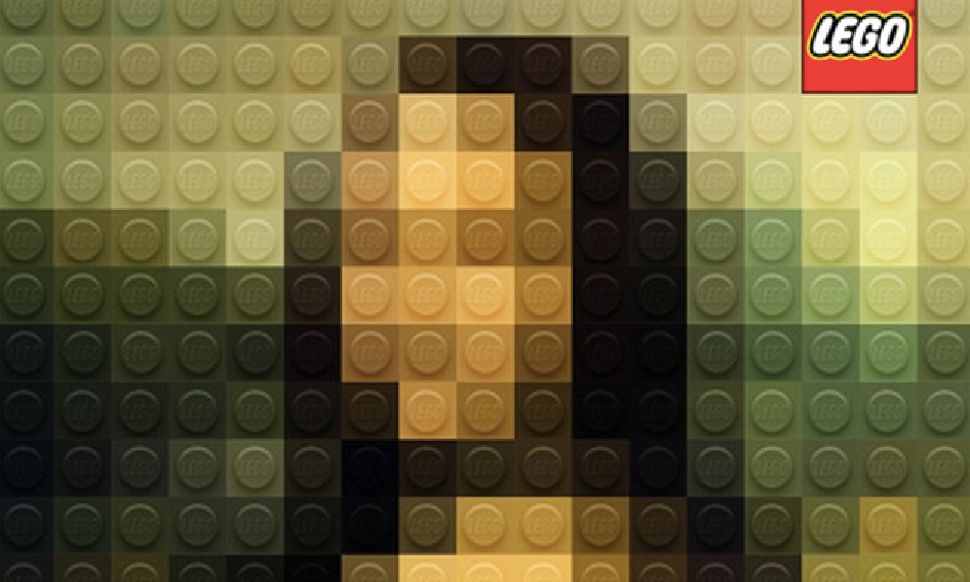
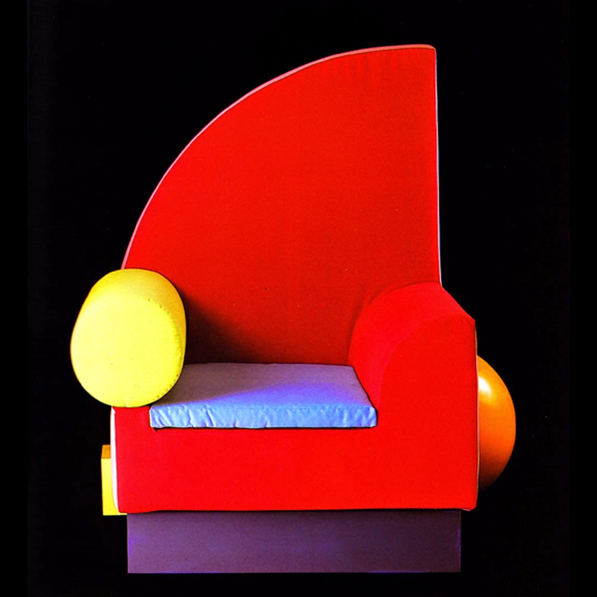
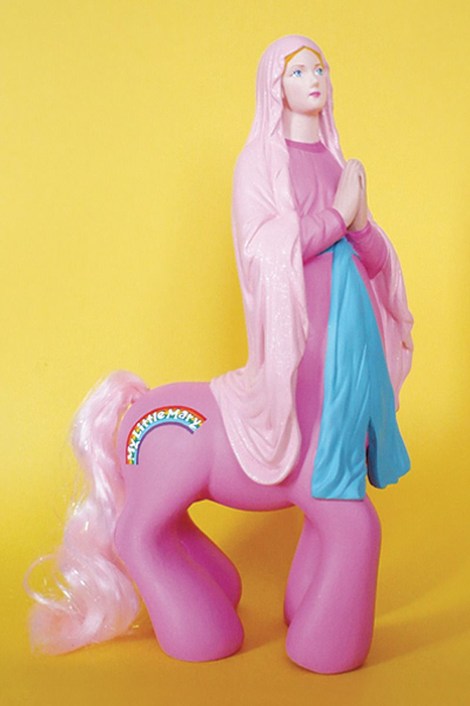
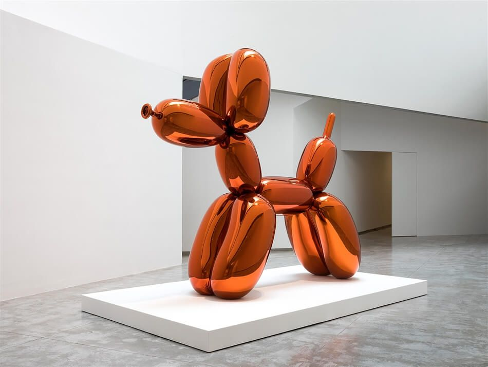
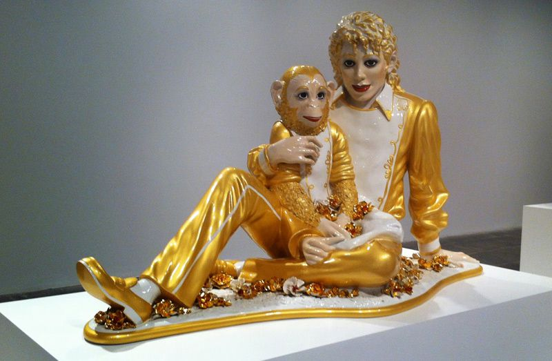

+++
title = "Tasarım Sözlüğü: Kitsch"
seotitle = "Tasarımda Kitsch Nedir?"
description=""
url="sayi-6/tasarimda-kitsch-nedir"
aciklama=" “Net ve katı tanımlar beklemeyin, aksi takdirde dersin sonunda pek çok sorunun yanıtsız kaldığını düşünürsünüz ki bu soruları ancak kitsch üzerine üç ciltlik bir çalışma yaparsam açıklayabilirim.” -Hermann Broch"
type="sayfa"
thumb="/img/tasarimda-kitsch-thumbnail.jpg"
date = "2021-02-05"
sayi=["06"]
sayfa="04"
yazar=["goksu gokturk", "elif ersoz"]
tags= ["anasayfa", "dergi", "tasarim sozlugu"]
+++

<div class="container">
   <div class="row">
      <div class="col-md-6">
         <p class="bg-grey p-md-3">
            Kitsch sözcüğünün kökeninin hangi dile ait olduğu ya da hangi
            kelimeden türediği tam olarak bilinmemektedir. Literatürde kitsch
            sözcüğünün kökenine ve anlamlarına dair yapılan açıklamaların
            çeşitlilik gösterdiği söylenebilir. İngilizce-Türkçe sözlükte
            kitsch’ in tanımı, “Uyduruk sanat eseri; ucuz edebiyat; sanat eseri
            gibi ortaya sürülen fakat saçma, gülünç veya değersiz olarak kabul
            edilen süslü eşyalar, edebiyat yazıları, vb.” olarak yapılmaktadır
            (Longman, 1993). Almanca-Türkçe sözlük ise kitsch’ i “İlkel
            araçlarla ve yollardan duyguları harekete geçirmek isteyen sözde
            sanat eseri; sanat değeri olmayan değersiz eser, bayağı şey,
            zevksizlik” olarak tanımlamaktadır. (TDK, 1993)-
            <em
               >(ulakbilge, 2017, Cilt 5, Sayı 14, Volume 5, Issue 14, Halk ve
               Zevksizlik Arasında: Bir Kitsch Sosyolojisine Doğru, Ersin
               BERK</em
            >
         </p>
      </div>
      <div class="col-md-3">
         <p>
            Kitsch ile ilgili sayısız tanım ve söylem olsa da, terim anlamı
            olarak var olan sanatın aşağı bir kopyasının üretilmesine -karşı bir
            sanat yapılmasına- verilen isimdir. Daha çok bir eşya, ürün eser
            gibi yapıları ucuzlaştırma, aşağılama; estetik düzeyi kötü derecede
            bir yapıt için kullanılır gibi görünse de aslında her şey en derinde
            karşıt bir sanat üretme arzusu ile başlamıştır.
         </p>
      </div>
      <div class="col-md-3">
         <p>
            Kitsch&#39;in ilk ortaya çıkışı 18. yüzyılın sonlarında Batı
            Avrupa&#39;da ortaya çıkan birçok kültürel, bilimsel, teknolojik,
            toplumsal ve siyasi dönüşümleri ve beraberinde değişimleriyle yeni
            bir dönem açılmaya başlamıştır. Bu dönemde bireysel kurallardaki
            yıkılış sanattaki gelenekselci normları da büyük ölçüde
            etkilemiştir. Artık
            <em>&quot;zevk&quot;</em> kuralsızlığın başkaldırısında topluma mal
            edilen bir haz olmuştur. Çoğunlukla da zevksizlik, Kitsch&#39; in
            doğuşunu meydana getirmiştir.
         </p>
      </div>
   </div>

   <div class="row">
      <div class="col-md-7">
            {{}}
         <p>Marco Sodano - Lego Master</p>
      </div>
      <div class="col-md-5">
            {{}}
         <p>Peter Shire- Bel Air</p>
      </div>
   </div>

   <div class="row">
      <div class="col-md-4">
          {{}}
      </div>
      <div class="col-md-4">
         <p>
            Anlamlarından soyutlanmış simgelerden oluşan bir karışımla; farklı
            kültürlerin bileşenleri gelişigüzel biçimde yeni bir bütün
            oluşturduğunda bu Kitsch’tir.
         </p>
         <p>
            {{}}
         </p>
      </div>
      <div class="col-md-4">
         <p>
            {{}}
         </p>
      </div>
   </div>

   <div class="row">
      <div class="col-md-4">
         <p>
            Farklı dinamikleri bünyesinde barındıran ve kural tanımaz bir yapısı
            olan sanat, değişim ruhunu sürekli olarak içinde tutmayı
            başarmıştır. Endüstriyel kültürün “herkes için sanat” anlayışı
            beraberinde “kitsch” diyebileceğimiz ürünlerin ortaya çıkmasına
            neden olmuştur. Sanayileşmeyle beraber gelen kırsal kültürün kent
            kültürüne adaptasyonu beraberinde bazı sorunları getirmiştir. Sanayi
            kültürünün oluşturduğu yapay, banliyö kentlerini oluşturan,
            çoğunluğu eğitimsiz bireylerden oluşan işçi sınıfı beğenisi, “yüksek
            kültür” özellikleri taşıyan sanat ve estetik değerlerinin erozyona
            uğramasına yol açmıştır. Kapitalist kültürün doymak bilmez açlığı
            sonucunda sanatın estetik değerleri kendisini genel beğeni düzeyinde
            dekoratife dayalı, kolay algılanabilir endüstriyel nesneye
            dönüştürmüştür. Walter Benjamin bunu sanatta “değer kaybı” olarak
            görmektedir. Modern sanatın ünlü eleştirmenlerinden Greenberg,
            Almanların harikulade bir ad verdiği “kitsch”i tiksinti ve zevk
            karışımı bir tutumla tanımlar.
            <em
               >(Akdeniz Sanat Dergisi, 2016, Cilt 9, Sayı 17, Sanatta Kitsch
               Olgusu Üzerine, Hikmet ŞAHİN)</em
            >
         </p>
      </div>
      <div class="col-md-4">
         <p>
            {{}}
         </p>
         <p><strong>Clement Greenberg | Sanat Eleştirmeni</strong></p>
      </div>
      <div class="col-md-4">
         <p>
            Greenberg’e göre kitsch, kültürün endüstrileşmesi ve kentleşmeyle
            başlar. Yerel kültürlerini, halk kültürlerini terk eden köylüler,
            kentlerde kendisi de bir endüstri ürünü olan kitle kültürünü
            tüketirler ve üretirler. “Almanlar bu kültüre harika bir ad
            takarlar, kitsch: bütün o parlak fotoğrafları; dergi kapakları;
            reklamları; göz boyayıcı, bayağı öyküleri; resimli romanları;
            uyduruk müzik ve dansları; Hollywood filmleriyle popüler ve ticari
            sanat ve edebiyat.”
            <em
               >Clement Greenberg, Art and Culture-Critical Essays (Boston:
               Beacon Press, 1961) s. 9</em
            >.
         </p>
      </div>
   </div>

   <p>
      Bu <em>&quot;aşağı sanat&quot;</em> olarak algılanan türün kişiye aynı
      zamanda kötü duygularla birlikte zevk vermesi karmaşası da
      <strong>kitsch</strong> kelimesinin tanımlardan çok, hissiyat ile yakın
      bir kelime olduğunu anlamamızı sağlıyor. Aynı zamanda bu karmaşık ve
      belirsiz hissiyatlar da birbirinden farklı kitsch tanımlamaların meydana
      geldiği bir paradoksu doğuruyor.
   </p>

   <div class="row">
      <div class="col-md-6">
         <blockquote>
            <p>
               “Hristiyanlığın yaptığı şekilde Modernizm de rakiplerini
               şeytanlaştırmıştır. Ve Modernizm’ in yöneticileri cehennemi
               modern sanatın anti-tezini ifade eden “Kitsch” olarak adlandırdı.
               Kitsch, entelektüel ve yeni olmayan, kahverengi, içli, aşırı
               duygusal ve acıklı olan her şey için kullanılan bir kavram
               olmuştur.” -Odd Nerdrum
            </p>
         </blockquote>
         <blockquote>
            <p>
               “Kitsch’ in kökeninde varoluşla kayıtsız şartsız uzlaşma yatar.
               Ama varoluşun temeli nedir? Tanrı, insanlık, kavga, aşk, kadın
               vs. görüşler değiştiğine göre çeşitli Kitsch’ ler vardır.” -Milan
               Kundera
            </p>
         </blockquote>
      </div>
      <div class="col-md-6">
         <blockquote>
            <p>
               “Net ve katı tanımlar beklemeyin, aksi takdirde dersin sonunda
               pek çok sorunun yanıtsız kaldığını düşünürsünüz ki bu soruları
               ancak kitsch üzerine üç ciltlik bir çalışma yaparsam
               açıklayabilirim.” -Hermann Broch
            </p>
         </blockquote>
         <blockquote>
            <p>
               “Kitsch, alışılmamış bir durumdan yola çıkamaz; kişilerin
               belleklerine kazımış oldukları temel imgelerden türemek
               zorundadır.” -Milan Kundera, Var Olmanın Dayanılmaz Hafifliği
            </p>
         </blockquote>
         <blockquote>
            <p>&quot;Kitsch, sanatta kötü olan her şeydir.” -Hermann Broch</p>
         </blockquote>
      </div>
   </div>

   <div class="row">
      <div class="col-md-6">
         <p>
            {{}}
         </p>
         <p>Jeff Koons | Balon Köpeği | 1994-2000</p>
         <br ><br >
      </div>
      <div class="col-md-6">
         <p> <br>
            Çağdaş sanatta kitsch&#39; i resmileştirenin Jeff Koons olduğunu
            söylemek yanlış olmayacaktır. Ancak Koons, bir röportajında işlerini
            kitsch olarak görmediğinden bahsediyor ve şöyle devam ediyor:
            &quot;Bazı insanlar işlerimin kesinlikle kitsch olduğunu
            düşünüyorlar, ama ben işlerimi hiç o şekilde görmüyorum. İnsanlara
            söylemeye çalıştığım şey, aslında, onların geçmişlerini silmemeleri
            ve onları onlar yapan her şeyi harmanlayıp yol almaları. İşlerim,
            insanlara basitçe onları onlar yapan hiçbir parçayı reddetmemelerini
            söylüyor, geçmişlerini dikkate almalarını. Zenginlikleri onları
            onlar yapan şeyden geliyor; onlara yaraşmak için özgür
            hissedebilirler.&quot;
         </p>
         <p>
            Jeff Koons interview: ‘Some people certainly think that my work is
            kitsch, but I never see it that way’
         </p>
      </div>
   </div>

   <div class="row">
      <div class="col-md-6">
            {{}}
         <p>Jeff Koons | Michael Jackson ve Bubbles |1988</p>
      </div>
      <div class="col-md-6">
            {{}}
         <p>Jeff Koons ile Hulk | 2004-2012</p>
      </div>
   </div>


   <button
   class="btn markutbtn"
   data-target="#my-collapse"
   data-toggle="collapse"
   aria-expanded="false"
   aria-controls="my-collapse"
   >
   Kaynaklar
   </button>
   <div id="my-collapse" class="collapse">
   <pre> <small><code>  
    https://tr.wikipedia.org/wiki/Kitsch#:~:text=Kitsch 

    https://www.artkolik.net/yazilar/kitsch-sanat-uzerine-3053
    
    https://kavrakoglu.com/kitsch-kic/
    
    https://dergipark.org.tr/tr/download/article-file/275514
    
    https://www.artsy.net/gene/kitsch
    
    https://polen.itu.edu.tr/bitstream/11527/10769/1/550.pdf
    
    https://katilmandalina.wordpress.com/2018/04/09/ucuz-sanat-kitsch/
    
    https://www.paperblog.fr/6632525/j-ai-vu-la-vierge/amp
    
    http://www.soasig-chamaillard.com/detournement-sculpture-sainte-vierge
    
    https://dergipark.org.tr/tr/download/article-file/160818
    
    Milan Kundera, Varolmanın Dayanılmaz Hafifliği, İletişim Yayınları
    
    AKDENİZ SANAT DERGİSİ, 2016, Cilt 9, Sayı 17, SANATTA KITSCH OLGUSU ÜZERİNE, Hikmet ŞAHİN
    
    ulakbilge, 2017, Cilt 5, Sayı 14, Volume 5, Issue 14, Halk ve Zevksizlik Arasında: Bir Kitsch Sosyolojisine Doğru, Ersin BERK
    
    Mersin Üniversitesi Eğitim Fakültesi Dergisi, Cilt 8, Sayı 3, Aralık 2012, ss.70-79.,
    
    Kitsch (Kiç) Olgusunun Sanat Eğitiminde Estetik Beğeniler Açısından Sorgulanması, Nuray MAMUR
    
    Clement Greenberg, Art and Culture-Critical Essays (Boston: Beacon Press, 1961) s. 9.
    
     </code></small></pre>
   </div>
</div>
